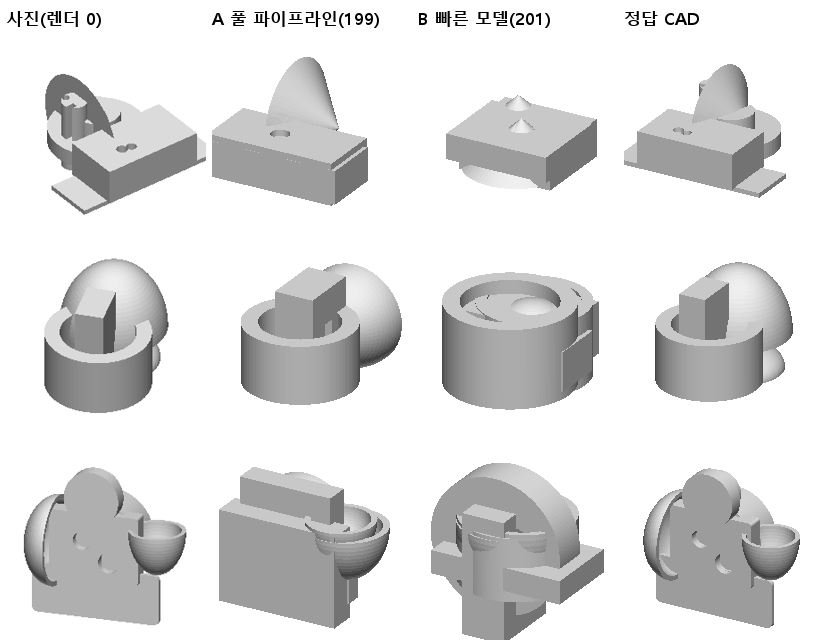

201 빠른 모델 S1 — 사진에서 도안 칸을 한 번에 내면 풀 파이프라인을 따라가나 (11-15 · 모델201.py · 손으로 정리)
분석
한 줄로
물음: 사진 → DINOv2(고정) → 작은 MLP → 도안 칸(몸 6 × 41) 한 번에 가는 빠른 모델이 풀 파이프라인(199)에 3 %p 안으로 붙나?
답: 아직 아니다. 모양 맞음 0.071 대 0.111 로 미리 정한 선(A − 0.03 = 0.081)에 못 미쳤다. 다만 위상(몸 수 · 구멍 수)은 0.566 대 0.434 로 오히려 앞선다. 이 판을 S1(짧은 버전)으로 등록하고, 풀 파이프라인 199 를 L1 로 함께 서빙하기로 했다.
왜 이 판을 했나
사용자는 「빠르게 결과 보는 모델과 풀 파이프라인으로 정확도 높이는 모델, 둘 다 서빙하면 된다」고 정했다. 풀 파이프라인은 3D 좌표 → 반쪽 3면도 → ⑥ 으로 단계가 많아 느리다. 사진에서 바로 도안을 내는 짧은 길이 얼마나 따라오는지부터 쟀다. 목표는 그림 한 장 → CAD 코드, 주 자는 모양 맞음(위상 + 표면 5 %)이다.
바꾼 것 하나
길 전체를 짧게 했다. DINOv2-base(고정)의 CLS 토큰 + 패치 16 × 16 을 4 × 4 로 평균 낸 17 × 768 특징 → LayerNorm → MLP(13,056 → 1,024 → 1,024 → 246). 자료는 tr200 과 같은 부품(약 10.7 만)에서 방위 0~90° 렌더만 썼다(보는 쪽 기준 도안). 40 바퀴 · 학습 144 초. 채점은 z 축 네 돌림 중 가장 맞는 쪽.
결과

| 탐침 시험 99 · 렌더 0 | S1(201) | L1(199) | 판정선 | 넘었나 |
|---|---|---|---|---|
| 모양 맞음 | 0.071 | 0.111 | ≥ 0.081 | ✗ |
| 10 % 안 | 0.091 | 0.182 | ||
| 같다 3 % | 0.04 | 0.03 | ||
| 위상 맞음 | 0.566 | 0.434 |
왜 이렇게 나왔나
확인한 것
- 칸을 까 보면(까보기.json) S1 은 「무엇」에 강하고 L1 은 「어디 · 얼마나」에 강하다. 몸 수 맞음 0.616 대 0.576 · 칸별 종류 맞음 0.493 대 0.443 · 특징 있음 0.714 대 0.678 은 S1 이 앞선다. 치수 상대오차 가운데 0.15 대 0.12 · 높이 오차 0.036 대 0.017 · 수평 오차 0.087 대 0.049 는 L1 이 앞선다.
- 처음엔 「빠른 모델이 숫자를 더 잘 맞춘다」고 말했지만, 까 보니 반대였다.
- 세 층 그림(세층.png): DINO 마지막 층 주의의 26~30 % 가 배경의 튀는 토큰 4 개에 몰렸고, 그 칸을 빼면 물체 구조(테 · 경계 · 모서리)에 간다. 머리가 쓰는 자리는 4 × 4 칸에 고르게 퍼져 있었다.
- 두 모델의 칸을 번호로 그냥 섞으면(무엇 = S1 · 어디 = L1) 0.091 로 L1 보다 낮았다. 몸 수와 칸 순서가 달라 같은 번호 칸이 같은 몸이 아니다.
짐작 (아직 확인 안 함)
- 4 × 4 평균이 자리 정보를 뭉갠다. 몸마다 질문(쿼리)으로 16 × 16 토큰을 고르는 주의 머리가 S2 후보다.
한계
- 시험 99 · 시드 하나 · 첫 판(DINO 고정 · 작은 MLP).
- 방위 0~90° 만 학습했다. 나머지 방위는 z 돌림 채점이 흡수한다.
배운 것과 다음
짧은 길은 「무엇」은 따라오지만 「어디 · 얼마나」를 못 따라온다.
- S1 은 빠른 미리보기로 서빙하고, 정확도는 L1 이 맡는다(하네스/버전.md).
- S2 후보: 4 × 4 평균 대신 몸 쿼리 주의 머리 — 도입 관문 D0 부터.